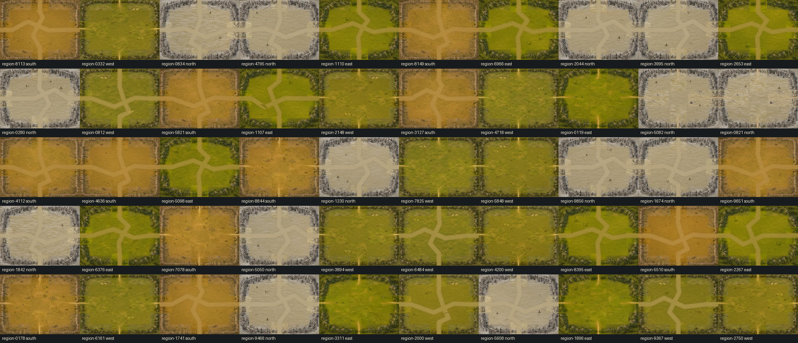
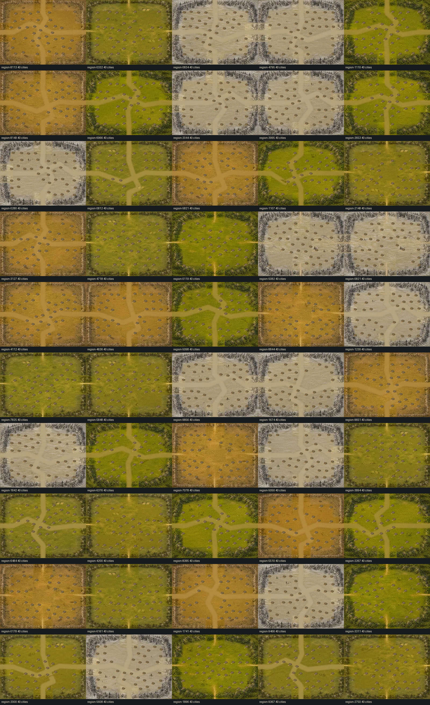
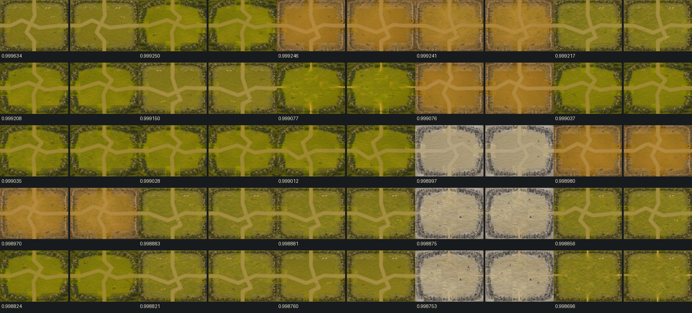
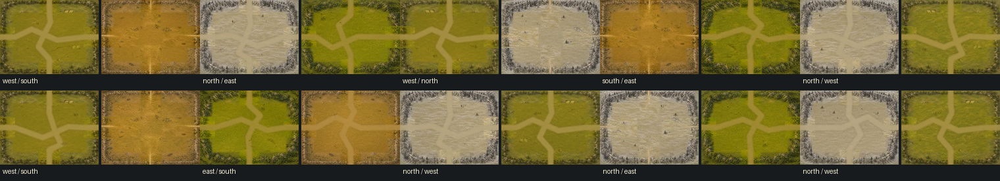
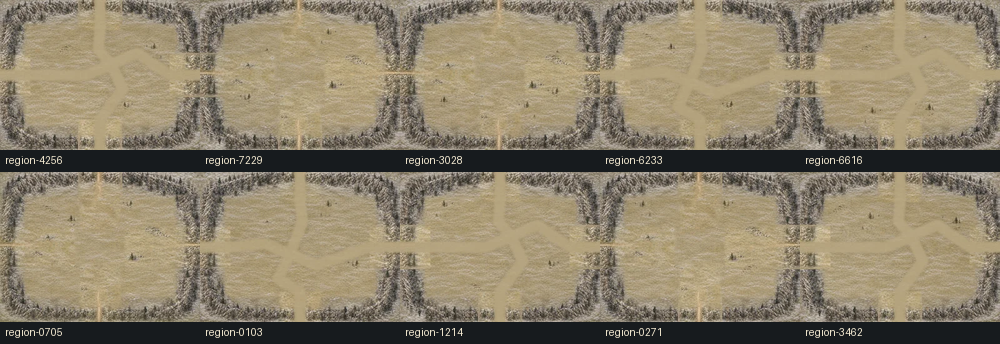
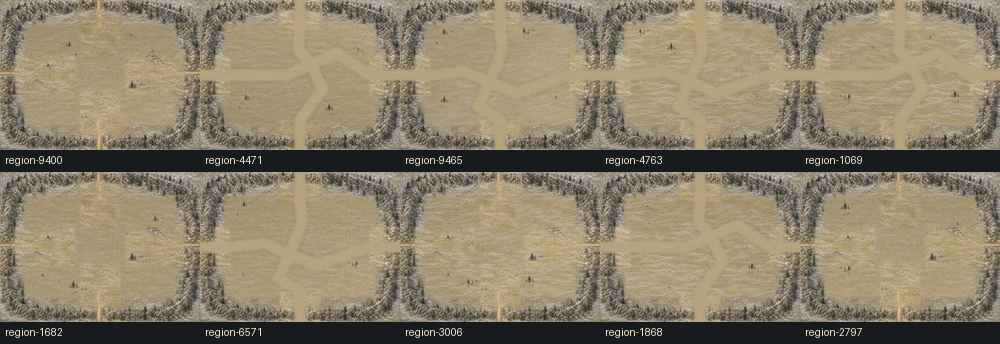
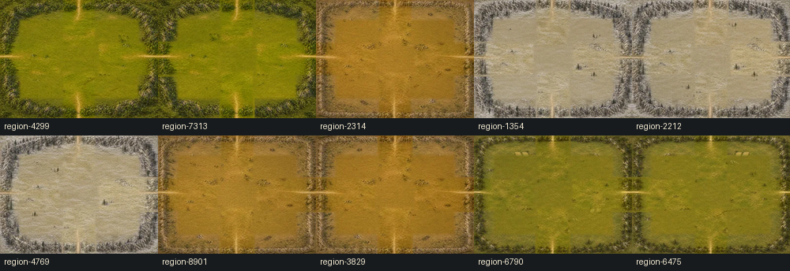

Phase 6E development-only 10,000-map QA
random-50-maps.png

random-50-city-overlays.png

highest-similarity-25-pairs.png

neighbor-transitions-10.png

common-foundation-10.png

common-perimeter-10.png

common-road-10.png
